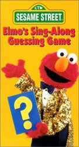

 Chaos is installed in Sesame Street! Elmo, the furry red creature, has created a new game and everyone wants to play it. Oscar the Grouch, who loves trash, says he is the one who plays the game better. Bert and Ernie say that they rock. The monster Herry disagrees, and simply says that no one can play the game. Grover thinks that he knows the secret to the game. The Cookie Monster cannot believe that someone would rather prefer to play the game than to eat cookies. Everyone is screaming against each other!
Meanwhile, Kermit the Frog is observing everyone and secretly preparing the strategy that will make him the most respected muppet: learning how to master Elmo's new game. But what game is this?
Elmo has a box filled with delicious cookies. Inside, the box has a grid shape, but Elmo does not show the contents of the box to anyone. Instead, he just says how many cookies are in each row, in each column and in each diagonal. For example, imagine the following cookie box (where 'X' stands for a cookie, and '.' for an empty spot). Figure 1 shows the numbers of cookies in each row and in each column.
. X . . X X . . 3 . X . . X . . . 2 . . . X . X X X 4 . X . . . . . . 1 0 3 0 1 2 2 1 1 Figure 1 - Cookies in each row and column |
In what respects do diagonals, everyone in Sesame Street knows what to do, but since you may not know their standards, they number their diagonals starting from the bottom left and ending in the upper right, like it is depicted in figure 2.
456789 345678 234567 123456
Figure 2 - Diagonals in Sesame Street
So given this order of the diagonals, the number of cookies in the diagonals for the box of figure 1 would be given by 0 1 0 1 2 0 2 2 2 0 0.
Given the number of cookies in each column, row and diagonal, Elmo's guessing game is to discover the contents of the box. If someone can guess the positions of the box, Elmo will give this person all the cookies!
You must help Kermit the Frog in mastering this game...
Given the number of cookies in each column, row and Diagonal of Elmo's box, you must discover the positions of the cookies inside the box. If there is more than one possible solution to the contents of the box, you should discover how many possible arrangements are there that fulfill the conditions and would give the same number of cookies in rows, columns and diagonals.
The first line of input contains two integers, R and C, representing respectively the number of rows and columns of the cookie box (1 &le R,C ≤ 10).
Then comes a line with exactly R integers separated by a space, indicating the number of cookies in each row, from the top to the bottom.
After that there is line with exactly C integers separated by a space, indicating the number of cookies in each column, from the left to the right.
Finally comes a line with exactly R+C-1 integers separated by a space, indicating the number of cookies in each diagonal, from the bottom right to the top left.
If there is a single possible solution (arrangement of cookies) for the given input, then you should output the contents of the box, by printing R lines, each one with C chars, with 'X' representing cookies and '.' representing empty spots.
If there is more than one possible solution, simply print a line with a single integer, indicating the number of possible arrangements of cookies in the box that would give the numbers of the input for quantities in rows, columns and diagonals. You can be sure that there will never be more than 10000 valid arrangements for the test cases in the input.
4 8 3 2 4 1 0 3 0 1 2 2 1 1 0 1 0 1 2 0 2 2 2 0 0 5 5 1 1 1 1 0 1 1 1 0 1 0 0 0 1 1 2 0 0 0
.X..XX.. .X..X... ...X.XXX .X...... 2
2006 Programming Contest of Porto University
Round 3, 11th of October of 2006
(Author: Pedro Ribeiro - DCC/FCUP)